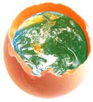

|
Wrapping your
universe. |
|
The forests, the seas, the sky - in a
delicate balance, nature envelops human life. The
infinite heavens, in turn, envelop mother earth, who is
integrally linked to the macrocosm. On another, but
not dissimilar, realm, Kawashima packages products;
products replete with our customer's limitless potential
- each product a dynamic universe in itself.
Kawashima sees the physical envelope for your product
as part of a comprehensive packaging plan -
aesthetically, sensitively, as we have for more than
85
years. | |
|
In essence, wrapping is charged with
conveying shades of gratitude and admiration from the
sender to the recipient. Packaging too, is an expression of
the sender's spirit; it is designing the face that
expresses the heart. In this spirit, Kawashima expresses
a commitment to environmental symbiosis, by developing
recyclable materials. Our approach to packaging is one
that is an sensitive to human feelings as it is to nature.
Our sincerity lies in wrapping your products, one by
one, in the materials and form that best envelop the heart
of the sender. |
|
Kawashima was established in 1912 as
manufacturers of confectionery machines. In 1951, after
developing a machine for wrapping caramels, we spread out
into the manufacturing of automated packaging equipment.
We have since produced more than 35,000 machines in 350
different models, and installed over 1000 line systems,
with which we have established our unshakable position as a
top brand worldwide. Kawashima's reliability and
performance wraps your universe in a big blanket of
security. |

|

|
Grasses, leaves, the bark of trees - the
Japanese have long used the blessings of nature
ingeniously in wrapping foods. With the development of the
tea ceremony, the paper wrappings for tea confections were
refined to an art. The "art of packaging" that the
Japanese are renowned for worldwide is Kawashima's
heritage; it is our culture. Kawashima combines
traditional Japanese aesthetic sensibility and
craftsmanship with a global perspective and the latest if
technology; we are redefining the state of the
art. |
|
From consumer packaging machinery to line
systems, then from transit packaging machinery to
material handling equipment - Kawashima's strength in
technical development has continually led the industry.
Now, by integrating computer technology, we have moved
into the realm of interfacing the production line with the
packaging line. Production, packaging, distribution - with
an accurate grasp of the stream from source to outflow
and the macro environment surrounding it, we are able to
create optimal systems. As total systems planners,
Kawashima is ever pursuing new visions. |

| | |
|